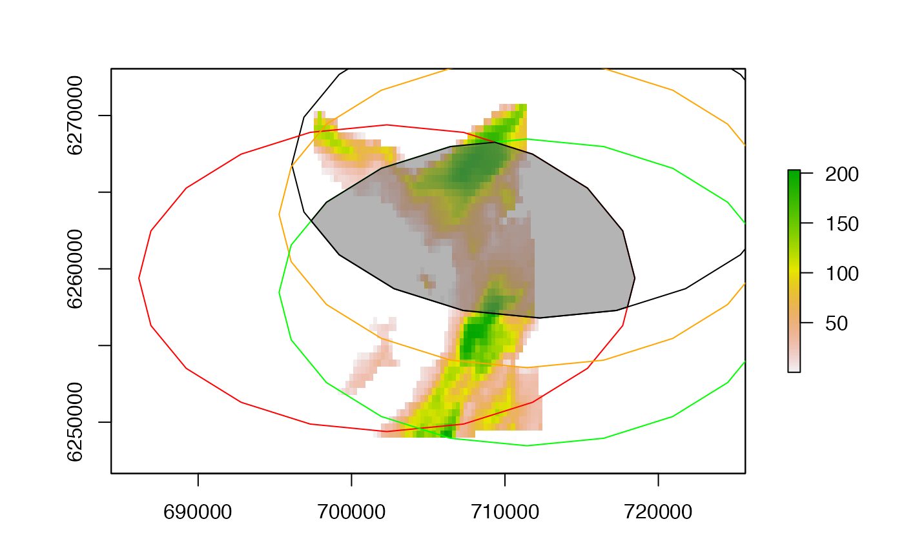
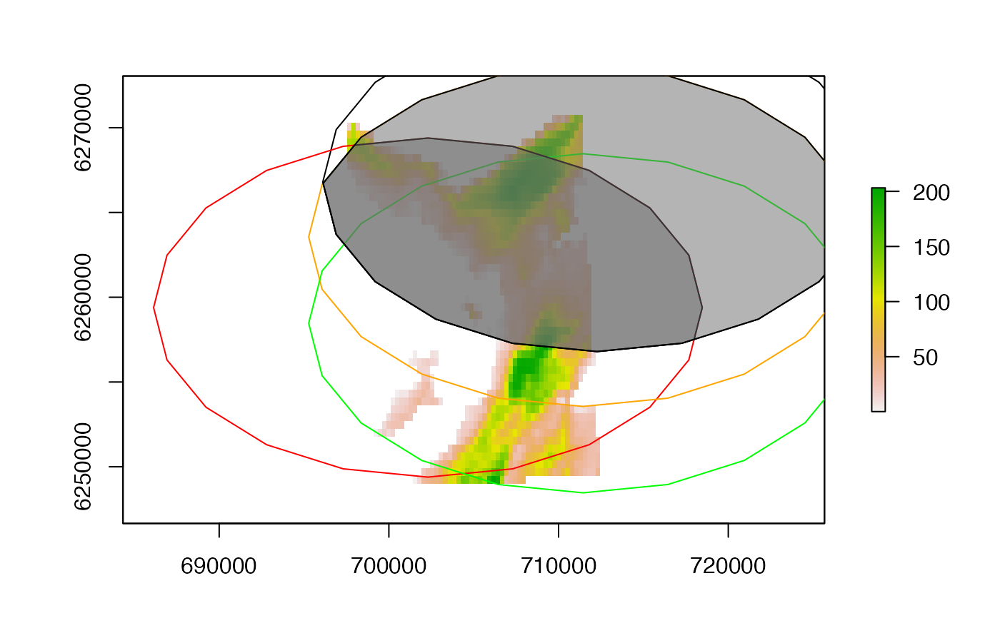
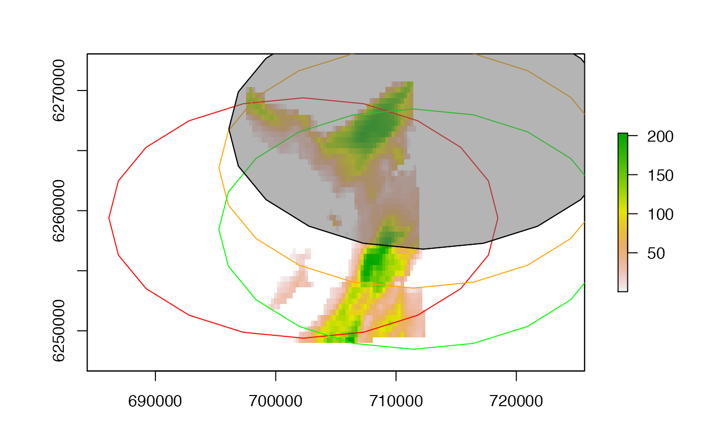
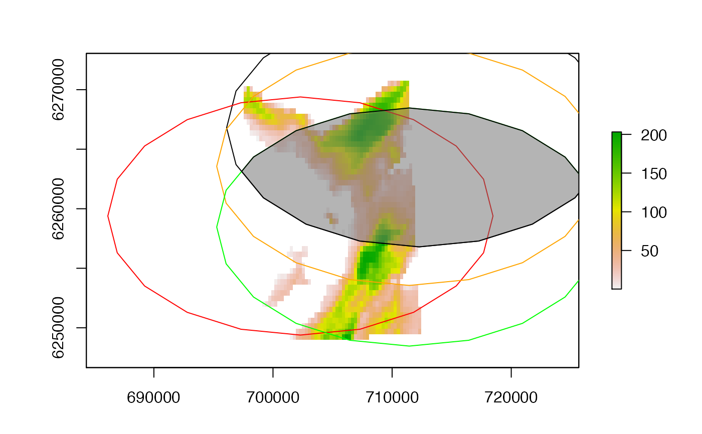

This function is a wrapper for gIntersection that extracts the intersection between inputted geometries. Unlike gIntersection, the function requires geometries to be specified as a list. The intersections between all (one or more) specified geometries, excluding NULL elements, are returned.
get_intersection(x, ...)
| x | A list of Spatial* geometries supported by |
|---|---|
| ... | Arguments passed to |
The function returns a Spatial* object of the intersection between all inputted geometries.
Edward Lavender
## Define raster parameters (for sampling/plotting) set.seed(1) n <- raster::ncell(dat_gebco) xy <- raster::coordinates(dat_gebco) utm <- raster::crs(dat_gebco) cols <- c("black", "red", "orange", "green", lwd = 2) col_int <- scales::alpha("dimgrey", 0.5) ## Define example polygons n_poly <- 4 polys <- lapply(1:n_poly, function(i){ xy_i <- xy[sample(1:n, 1), , drop = FALSE] xy_i <- sp::SpatialPoints(xy_i, utm) xy_i_buf <- rgeos::gBuffer(xy_i, width = 10000) return(xy_i_buf) }) #### Example (1): Define intersections between multiple (here, four) polygons # Plot area with polygons raster::plot(dat_gebco)#> [[1]] #> [[1]][[1]] #> [[1]][[1]][[1]] #> NULL #> #> #> #> [[2]] #> [[2]][[1]] #> [[2]][[1]][[1]] #> NULL #> #> #> #> [[3]] #> [[3]][[1]] #> [[3]][[1]][[1]] #> NULL #> #> #> #> [[4]] #> [[4]][[1]] #> [[4]][[1]][[1]] #> NULL #> #> #># Get intersection and add int <- get_intersection(polys) raster::plot(int, add = TRUE, col = col_int)#> [[1]] #> [[1]][[1]] #> [[1]][[1]][[1]] #> NULL #> #> #> #> [[2]] #> [[2]][[1]] #> [[2]][[1]][[1]] #> NULL #> #> #> #> [[3]] #> [[3]][[1]] #> [[3]][[1]][[1]] #> NULL #> #> #> #> [[4]] #> [[4]][[1]] #> [[4]][[1]][[1]] #> NULL #> #> #>#> [[1]] #> [[1]][[1]] #> [[1]][[1]][[1]] #> NULL #> #> #> #> [[2]] #> [[2]][[1]] #> [[2]][[1]][[1]] #> NULL #> #> #> #> [[3]] #> [[3]][[1]] #> [[3]][[1]][[1]] #> NULL #> #> #> #> [[4]] #> [[4]][[1]] #> [[4]][[1]][[1]] #> NULL #> #> #>#> [[1]] #> [[1]][[1]] #> [[1]][[1]][[1]] #> NULL #> #> #> #> [[2]] #> [[2]][[1]] #> [[2]][[1]][[1]] #> NULL #> #> #> #> [[3]] #> [[3]][[1]] #> [[3]][[1]][[1]] #> NULL #> #> #> #> [[4]] #> [[4]][[1]] #> [[4]][[1]][[1]] #> NULL #> #> #>